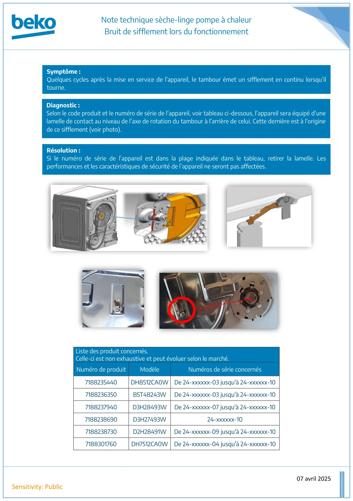

Note Technique seche linge PAC Bruit De Sifflement

Note technique sèche-linge pompe à chaleurBruit de sifflement lors du fonctionnement07 avril 2025Sensitivity: PublicListe des produit concernés.Celle-ci est non exhaustive et peut évoluer selon le marché.Numéro de produitModèleNuméros de série concernés7188235440DH8512CA0W De 24-xxxxxx-03 jusqu'à 24-xxxxxx-107188236350B5T48243WDe 24-xxxxxx-03 jusqu'à 24-xxxxxx-107188237940D3H28493WDe 24-xxxxxx-07 jusqu'à 24-xxxxxx-107188238690D3H27493W24-xxxxxx-107188238730D2H28491WDe 24-xxxxxx-09 jusqu'à 24-xxxxxx-107188301760DH7512CA0W De 24-xxxxxx-04 jusqu'à 24-xxxxxx-10Symptôme :Quelques cycles après la mise en service de l’appareil, le tambour émet un sifflement en continu lorsqu’iltourne.Diagnostic :Selon le code produit et le numéro de série de l’appareil, voir tableau ci-dessous, l’appareil sera équipé d’unelamelle de contact au niveau de l’axe de rotation du tambour à l’arrière de celui. Cette dernière est à l’originede ce sifflement (voir photo).Résolution :Si le numéro de série de l’appareil est dans la plage indiquée dans le tableau, retirer la lamelle. Lesperformances et les caractéristiques de sécurité de l’appareil ne seront pas affectées.
1 / 1